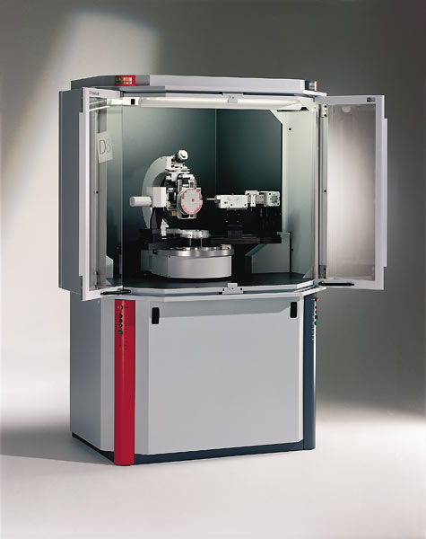

X-Ray Diffractometer (XRD)
St. Xavier’s College, Mapusa-Goa has a state-of-the-art Instrumentation Center which houses the X-Ray Diffractometer (XRD).
X-Ray Diffraction studies deal with material characterization and help in identification of the atomic and molecular structure in materials.
X-ray powder diffraction is most widely used for the identification of unknown crystalline materials (eg. minerals, inorganic compounds).
Determination of unknown solids is critical to studies in geology, environmental science, material science, engineering and biology.
In addition to identification of the compounds, X-Ray diffractometer can also be used to determine strain, preferred orientation,
crystallographic structure, and grain size of crystalline materials.
Analysis of samples are done for the students, faculty and researchers from across Goa using the XRD instrument.
The cost of each sample analysis is Rs. 200/-.
For appointment to carry out sample analysis, an email has to be sent to The Principal on xavierscollege1963@gmail.com.
Instrument In-charge: Ms. Flavia S. Travasso, Assistant Professor, Department of Chemistry.